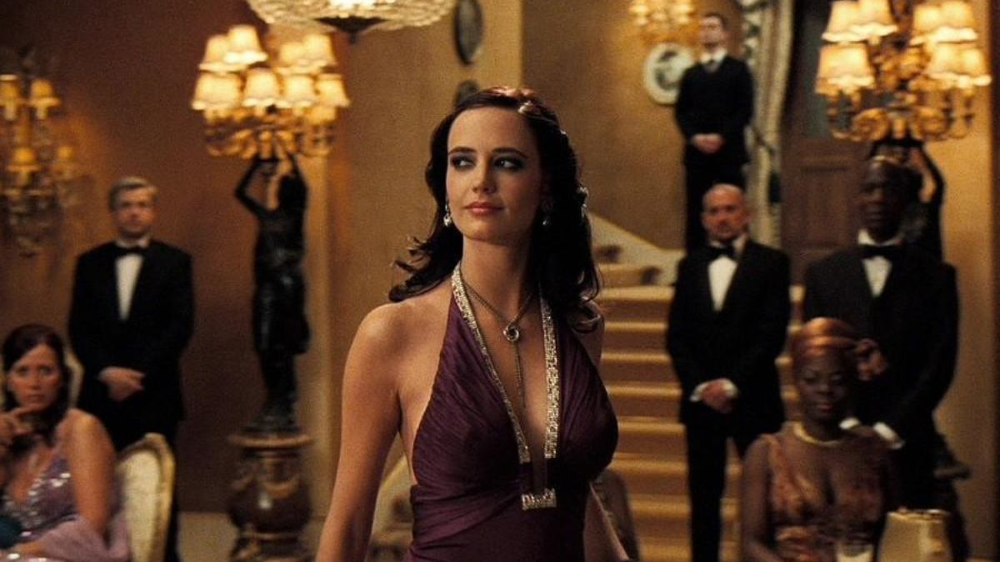
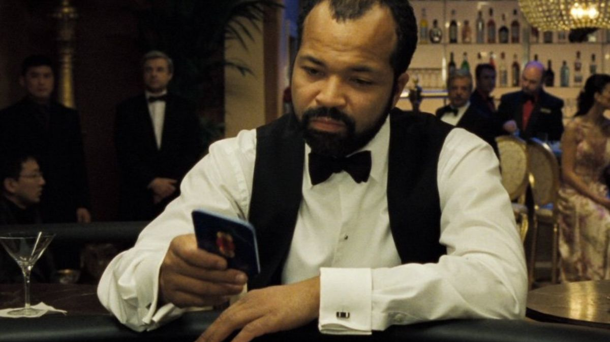
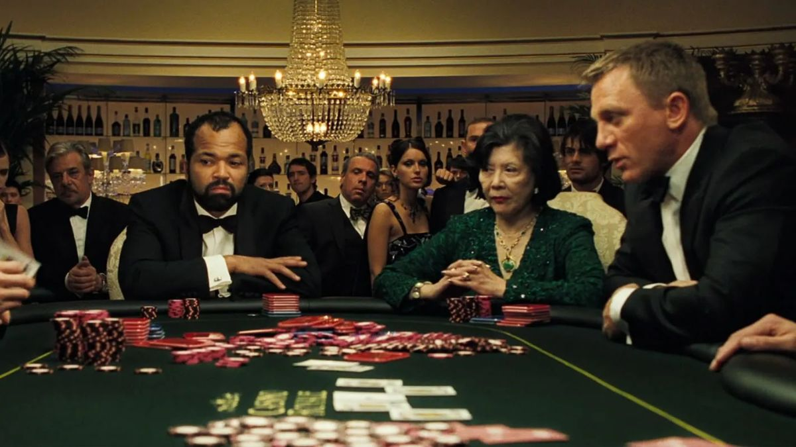

Publicado el 29 de mayo de 2025
James Bond enfrenta a Le Chiffre, un banquero del terrorismo internacional, en una intensa partida de póker. Esta versión reinicia al agente 007 con un enfoque más realista, mostrando su vulnerabilidad y su evolución emocional.
La película marca el debut de Daniel Craig como Bond, presentando un agente más rudo, con heridas físicas y emocionales. Desde la brutal escena inicial en blanco y negro hasta el romance con Vesper Lynd, el tono es más crudo e íntimo.
La tensión se concentra en la mesa de póker del Casino Royale, donde Bond se enfrenta a su adversario en un duelo psicológico y estratégico. El suspenso se mantiene sin necesidad de explosiones constantes, lo que eleva el impacto dramático.
